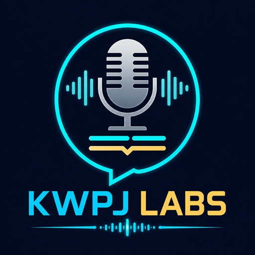

Naturalny polski lektor napisów dla Kodi.
W Kodi zainstaluj najpierw pakiet repozytorium, a potem dodatek Lektor PL z tego repozytorium.
Pakiet startowy: repository.subtitle.tts.pl-1.0.7.zip
KWPJ LABS · provider: emillo1983